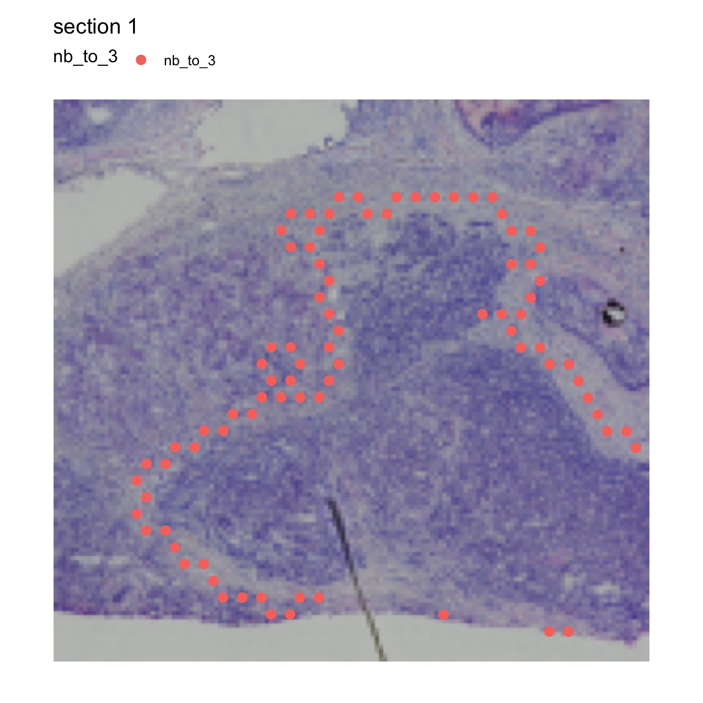

library(tibble)
library(ggplot2)
library(patchwork)
library(STUtility2)
library(scico)
library(tidyr)
library(dplyr)Region neighbors
In this notebook, we’ll have a look at how you can use spatial methods in STUtility2.
In this tutorial, we will continue with the same Seurat object that we created in the ‘radial distances’ tutorial. If you haven’t downloaded and processed the data yet, you should go back to that tutorial first.
Region neighbors
In the previous tutorial we calculated radial distances from the center of a tumor region. These distances can easily be used to define a ‘tumor microenvironment’ as well as the leading edge of the tumor.
If you are only interested in finding spots that are located at the border of a region of interest, you can use the RegionNeighbors function instead. RegionNeighbors automatically detects spots that are located inside or outside the border or both.
Let’s demonstrate how it works with an example. If we want to find the spots that are neighbors to cluster 3, we set column_name = "seurat_clusters" and column_labels = "3":
se <- RegionNeighbors(se, column_name = "seurat_clusters",
column_labels = "3")ℹ Finding neighboring spots for '3'→ Excluding neighbors from the same group→ 169 neighbors left→ Returning neighborsIn our meta.data slot, we now have a new column called “nb_to_3”, short for “neighbors to cluster 3”. In the plot below, you can see that this column provides information about which spots are outside the border of cluster 3.
MapLabels(se, crop_area = c(0.45, 0.6, 0.8, 0.93),
column_name = "nb_to_3", drop_na = TRUE,
image_use = "raw", pt_size = 3)
We can tweak thee function to identify the inner border instead, i.e. the spots that are located at the “tumor edge”. When we run RegionNeighbors with mode="inner", we get a column called inner_border_3 which tells us what spots are on the “tumor edge”.
se <- RegionNeighbors(se, column_name = "seurat_clusters",
column_labels = "3", mode = "inner")ℹ Finding neighboring spots for '3'→ Returning neighborsMapLabels(se, crop_area = c(0.45, 0.6, 0.8, 0.93),
column_name = "inner_border_3",
image_use = "raw", pt_size = 3, drop_na = TRUE)
If we want to get both the inner and outer borders, we set mode="inner_outer.
NB: If we run a mode that returns “outer” border spots, the prefix of the returned column will be “nb_to_” by default. This behavior can be overridden by setting the column_key=...
se <- RegionNeighbors(se, column_name = "seurat_clusters",
column_labels = "3", mode = "inner_outer")ℹ Finding neighboring spots for '3'→ Returning neighborsMapLabels(se, crop_area = c(0.45, 0.6, 0.8, 0.93),
column_name = "nb_to_3",
image_use = "raw", pt_size = 3, drop_na = TRUE)
The last mode (mode="all_inner_outer") allows us to select the outer border spots while keeping all spots belonging to our cluster of interest.
se <- RegionNeighbors(se, column_name = "seurat_clusters", column_key = "(all)nb_to_",
column_labels = "3", mode = "all_inner_outer")ℹ Finding neighboring spots for '3'→ Returning neighborsMapLabels(se, crop_area = c(0.45, 0.6, 0.8, 0.93),
column_name = "(all)nb_to_3",
image_use = "raw", pt_size = 3, drop_na = TRUE)
One example of how this information can be used is to run a DE test between the outer and inner borders to find genes that are differentially expressed in spots just outside the “tumor edge”:
border_markers <- FindMarkers(se, ident.1 = "nb_to_3",
ident.2 = "3", group.by = "nb_to_3")
# Filter results
border_markers_up <- border_markers |>
filter(p_val_adj < 0.01, avg_log2FC > 0) |>
arrange(-avg_log2FC) |>
slice_head(n = 10)
# Subset Seurat object to include border spots
se_border_spots <- SubsetSTData(se, expression = nb_to_3 %in% c("3", "nb_to_3"))
# Violin plot
VlnPlot(se_border_spots, features = rownames(border_markers_up), group.by = "nb_to_3") &
theme(axis.title = element_blank())
If you want to select a wider band of spots surrounding a ROI, you can calculate radial distances and set thresholds instead.